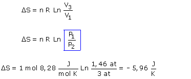

b)
 |
La línea de puntos representa la transformación irrever-sible (Que no se puede representar en el diagrama P - V) Para calcular cambios de entropía hay que trabajar con transformaciones reversibles |
Cambio de entropía en la transformación 1-3-2:
ΔS = (15.8 - 5.96) J / K = 9.84 J / K
La entropía es función de estado, su variación solo depende de los estados inicial y final. La pequeña diferencia con el resultado anterior se debe a los redondeos.
|
|
La línea de puntos representa la transformación irrever-sible (Que no se puede representar en el diagrama P - V). Para calcular cambios de entropía hay que trabajar con transformaciones reversibles |
 |
 |
 |  |